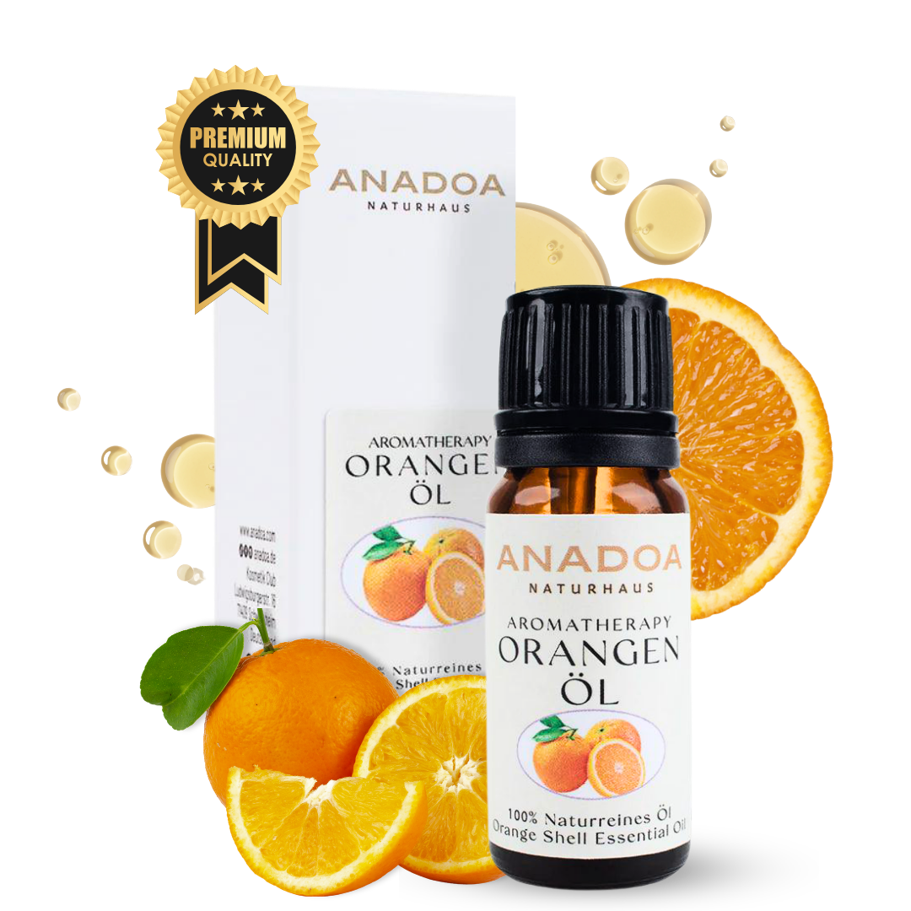

Was ist Orangenöl?
Orangenöl, genauer gesagt das Öl der Süßorange (Citrus sinensis), ist das 'Happy-Öl' der Aromatherapie. Niemand kann an einem Fläschchen Orangenöl riechen, ohne ein unbewusstes Lächeln auf den Lippen zu haben. Der Duft ist unverwechselbar fruchtig, extrem süß, warm und strahlend.
Während Zitrone den Geist schärft und wach macht, wirkt die Orange harmonisierend, ausgleichend und zutiefst tröstend. Es ist das perfekte Öl für kalte, dunkle Wintertage, bei nervöser Unruhe, Ängsten und Schlafproblemen. In der Aromapflege wird es standardmäßig eingesetzt, um eine warme, freundliche Raumatmosphäre zu schaffen.
Wo und wie wird Orangenöl geerntet?
Der Süßorangenbaum liebt Wärme und benötigt viel Wasser. Die größten und qualitativ hochwertigsten Anbaugebiete für Orangenöl liegen heute in Brasilien und in den USA (Florida, Kalifornien). Aber auch im Mittelmeerraum (Italien, Türkei) werden erstklassige Orangen angebaut.
Das ätherische Öl ist ein Nebenprodukt der Orangensaft-Produktion. Es sitzt in winzigen Bläschen in der äußeren, orangefarbenen Schicht (Flavedo) der Fruchtschale. Geerntet wird in den Wintermonaten, wenn die Früchte ihre volle Reife und Süße erreicht haben.
Kaltpressung: Wie wird Orangenöl hergestellt?
Genau wie Zitronenöl wird auch Orangenöl nicht destilliert, sondern durch mechanische Kaltpressung (Expression) aus den Schalen gewonnen. In riesigen Maschinen werden die Früchte gerollt und geritzt, sodass die Ölsekretdrüsen platzen. Das ätherische Öl wird dann in einer Zentrifuge vom austretenden Fruchtwasser getrennt.
Da Orangenöl massenhaft als Nebenprodukt der Saftindustrie anfällt, ist es eines der günstigsten, aber dennoch therapeutisch wertvollsten ätherischen Öle der Welt. Eine Flasche echtes Orangenöl ist für jeden erschwinglich.
Biochemie: Die Wirkstoffe im Orangenöl
Orangenöl ist ein biochemisches Monstrum – es besteht fast ausschließlich aus einem einzigen Molekül:
- D-Limonen (90 - 95%): Kein anderes Öl enthält mehr Limonen. Dieser extrem hohe Monoterpen-Anteil ist der Grund für die unschlagbar stimmungsaufhellende, immunstimulierende und fettlösende Kraft des Öls.
- Myrcen und Linalool: In Spuren enthalten, aber sie sorgen für die beruhigende, entspannende Komponente, die das Orangenöl vom reinen 'Wachmacher' Zitrone unterscheidet.
- Aldehyde (Octanal, Decanal): Geben dem Öl sein unverwechselbares, fruchtiges Aroma.
Woran erkennen Sie 100% naturreines Orangenöl?
Da es ohnehin sehr günstig ist, wird Orangenöl selten mit anderen Ölen gestreckt, aber die Qualität der Schalen ist entscheidend:
- Ungespritzt (Bio-Qualität): Da das Öl aus der Schale gepresst wird, finden sich alle Pestizide des Anbaus im Öl wieder. Kaufen Sie Orangenöl zwingend nur in Bio-Qualität.
- Die Art: Achten Sie auf 'Citrus sinensis' (Süßorange). Es gibt auch 'Citrus aurantium' (Bitterorange), die völlig anders riecht und stark phototoxisch ist.
- Die Farbe: Echtes kaltgepresstes Orangenöl hat eine wunderschöne, intensiv orange bis dunkelgelbe Farbe. Wenn es farblos ist, wurde es destilliert und verliert viele seiner süßen, komplexen Noten.
Anwendung: Orangenöl richtig mischen und nutzen
Orangenöl ist das ultimative 'Wohlfühl-Öl':
- Gegen Winterdepression und Stress: 5 Tropfen Orangenöl im Diffuser vertreiben trübe Gedanken und schaffen sofort eine geborgene, fröhliche Atmosphäre.
- Massageöl für gute Laune & Straffung: 4 Tropfen Orangenöl in 20 ml Mandelöl mischen und sanft in den Körper einmassieren. Es entspannt die Muskeln und regt die Lymphe an.
- Als Einschlafhilfe für Kinder: 2 Tropfen Orangenöl + 1 Tropfen Lavendelöl im Kinderzimmer vernebeln. Diese Kombination gilt als die effektivste, sanfte Schlafmischung für unruhige Kinder.
Sicherheit und häufige Anwendungsfehler bei Orangenöl
Hinweis: Süßorangenöl ist sehr sicher, aber beachten Sie Folgendes:
- Die Haltbarkeit-Falle: Orangenöl verdirbt extrem schnell. Nach dem Öffnen der Flasche kommt Sauerstoff an das D-Limonen, was zur Bildung von hautreizenden Peroxiden führt. Lagern Sie es dunkel und idealerweise im Kühlschrank (max. 9 Monate Haltbarkeit nach Öffnung).
- Nicht in Plastikflaschen mischen: Das Limonen im Orangenöl löst Weichmacher und Plastik innerhalb von Stunden auf. Mischen Sie Massageöle immer nur in Glasflaschen.
Bewährte Aromatherapie-Mischungen mit Orangenöl
Orangenöl mischt sich mit absolut allem. Es verleiht blumigen Düften Süße und nimmt scharfen Hölzern die Spitze:
- Die 'Glücklicher Feierabend' Mischung: 3 Tropfen Orangenöl + 2 Tropfen Ylang-Ylang-Öl im Diffuser. Sinnlich, süß und tiefenentspannend.
- Die 'Winter-Kuschel' Mischung: 3 Tropfen Orangenöl + 1 Tropfen Zimtrindenöl (sehr vorsichtig dosieren!) + 1 Tropfen Nelkenöl. Riecht nach Lebkuchen und Geborgenheit.
- Das 'Gute-Laune' Body-Oil: 5 Tropfen Orangenöl + 2 Tropfen Rosmarinöl in 30 ml Jojobaöl. Perfekt nach dem morgendlichen Duschen.
Häufig gestellte Fragen zu Orangenöl
Ist
Orangenöl genauso phototoxisch wie Zitronenöl?
Überraschenderweise nein! Süßes Orangenöl (Citrus sinensis) enthält fast keine Furocumarine und gilt im Gegensatz zu Zitrone, Bergamotte oder Limette als nicht-phototoxisch. Sie können es verdünnt auf der Haut anwenden, ohne bei anschließender Sonnenexposition schwere Verbrennungen befürchten zu müssen. (Ausnahme: Bitterorangenöl ist phototoxisch!).
Macht
Orangenöl wirklich glücklich?
Ja. Der extrem hohe Gehalt an D-Limonen im Orangenöl interagiert direkt mit dem limbischen System im Gehirn und fördert die Ausschüttung von Serotonin (dem Glückshormon). Es ist in der Aromatherapie das wichtigste Öl gegen Winterdepressionen, Stress und Ängste.
Hilft
Orangenöl bei Cellulite?
Orangenöl wird sehr häufig in straffenden Körperölen eingesetzt. Es regt die Lymphdrainage massiv an und fördert die Durchblutung des Gewebes. Wenn Sie 5 Tropfen Orangenöl in 20 ml Mandelöl mischen und in die betroffenen Stellen einmassieren, kann dies das Hautbild langfristig verbessern.
Dürfen
Kinder Orangenöl benutzen?
Orangenöl (süß) ist eines der sichersten und beliebtesten Öle für Kinder. Der süße Duft vermittelt Geborgenheit und hilft extrem gut bei Einschlafproblemen, Ängsten ('Monster unter dem Bett') oder Schulstress. 1-2 Tropfen im Diffuser im Kinderzimmer genügen.
Warum
riecht mein Orangenöl plötzlich nach Plastik/Terpentin?
Wie alle kaltgepressten Zitrusöle hat Orangenöl eine sehr kurze Haltbarkeit (ca. 6 bis 9 Monate nach Öffnung). Der hohe Limonen-Anteil reagiert mit Sauerstoff und oxidiert. Wenn sich der Duft verändert, entsorgen Sie das Öl oder nutzen Sie es nur noch zum Putzen, da oxidiertes Orangenöl stark hautreizend ist.